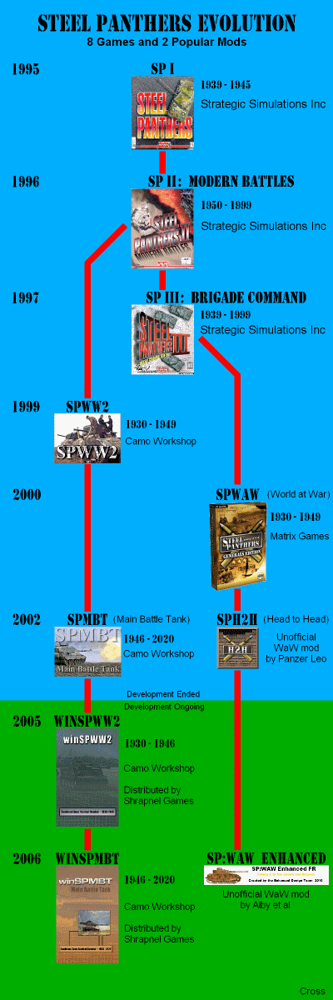
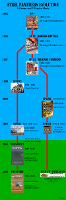
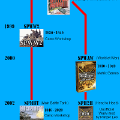

Custom Gallery Processor
Scale and Crop
Landscape Images
Original
Resize to 200 x 200
Default Hippo
Custom
Portrait Images
Original

Resize to 200 x 200
Default Hippo

Custom

Code and presentation
Github
Michiel Rop